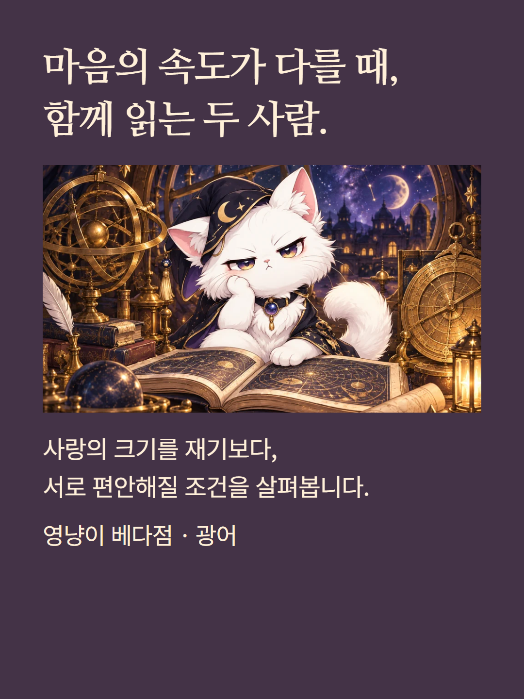
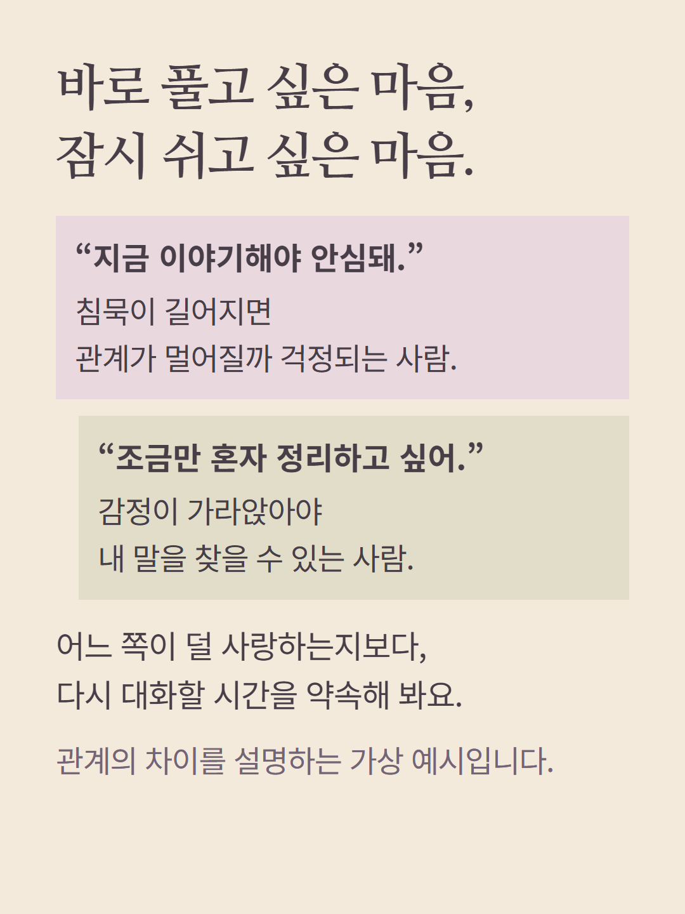
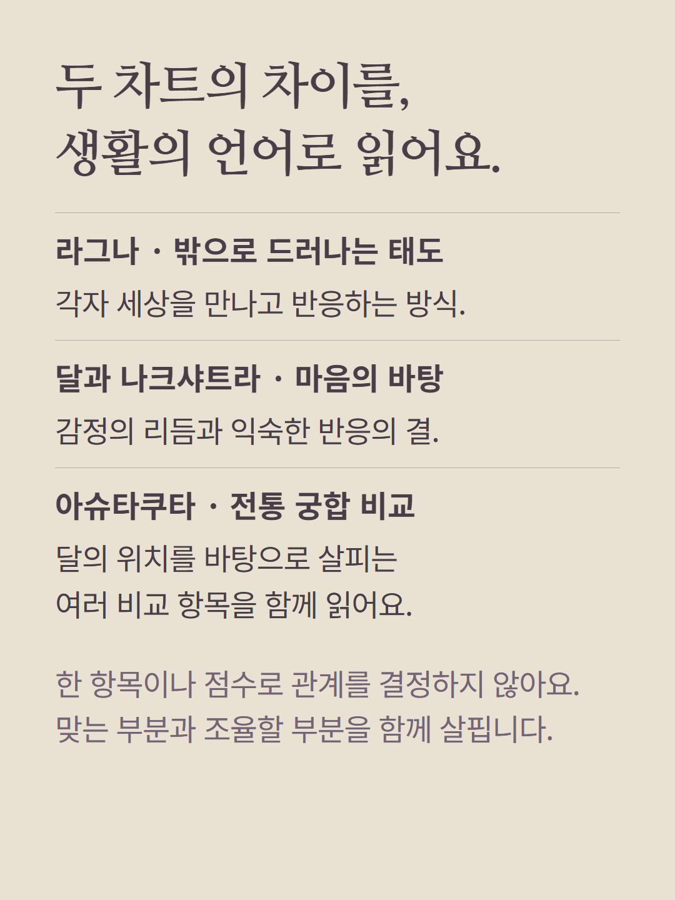
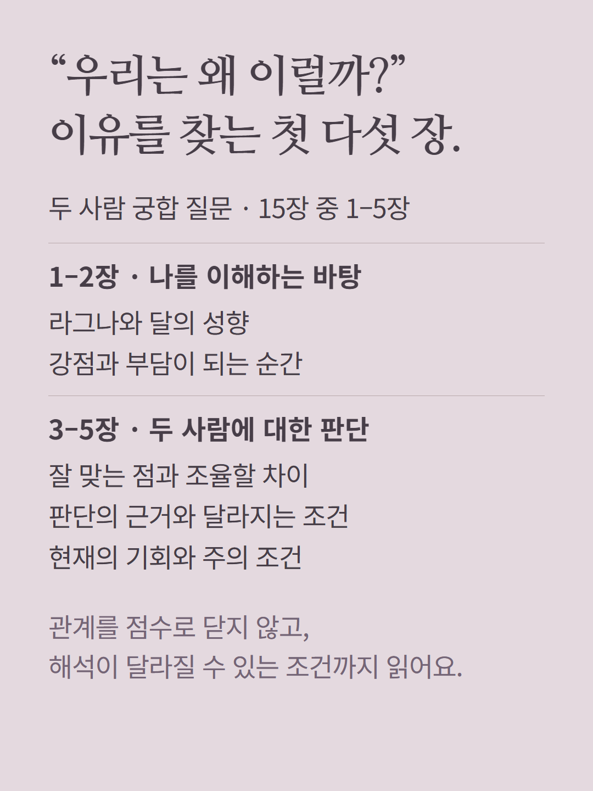
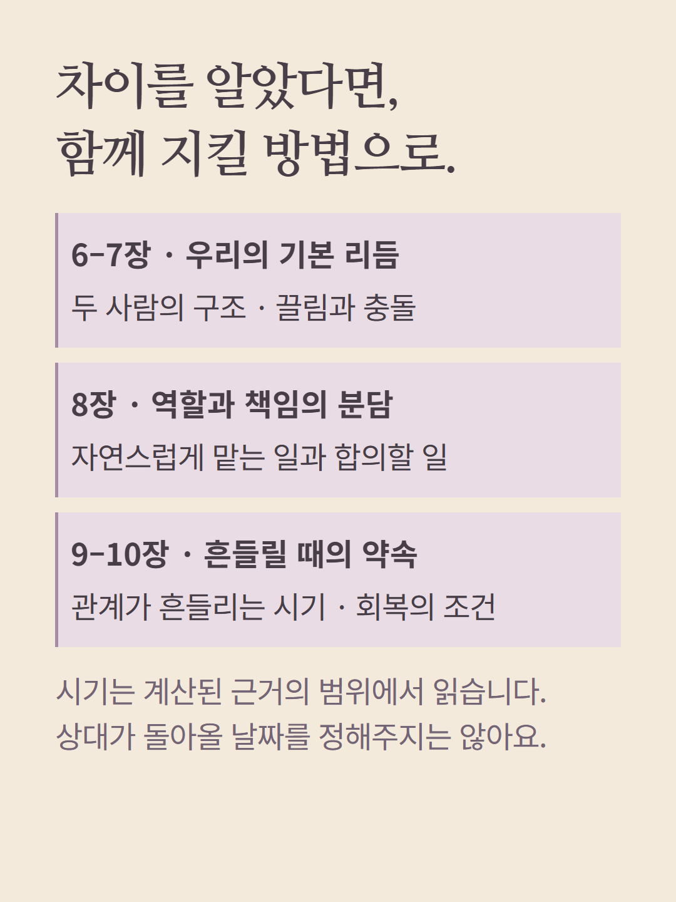
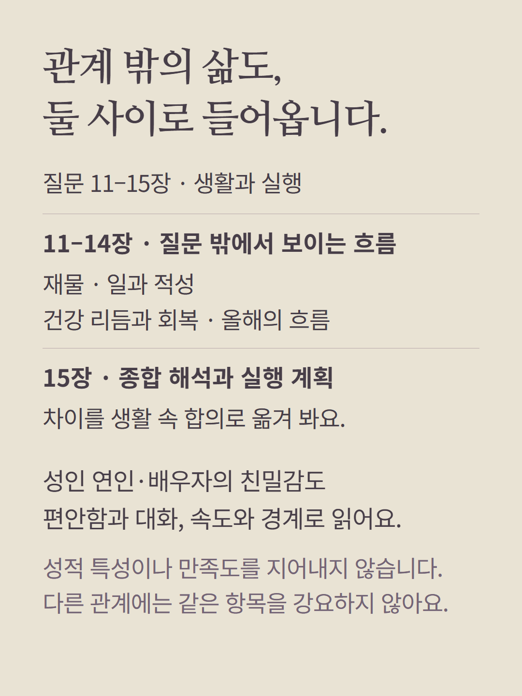
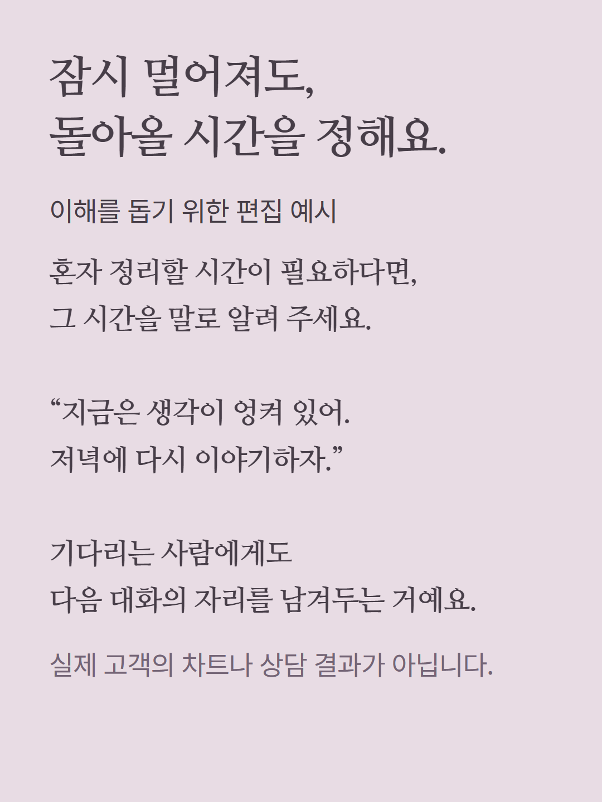
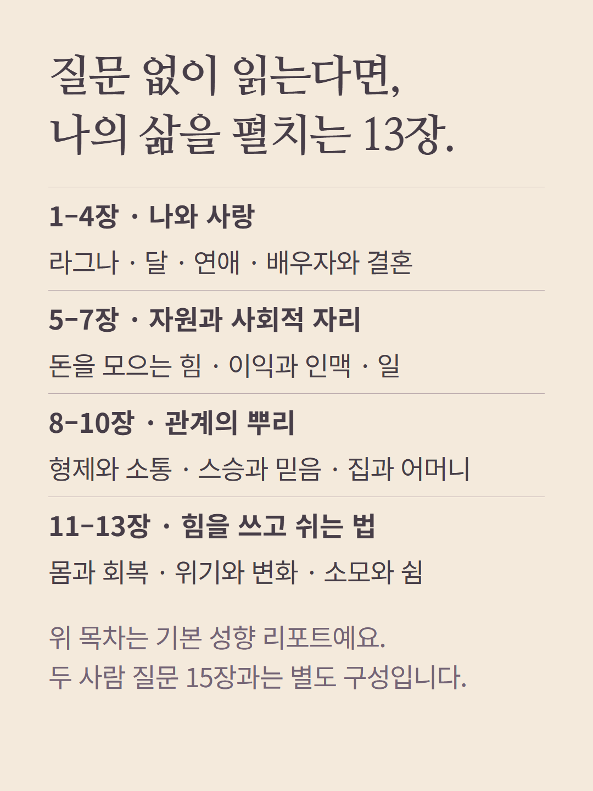
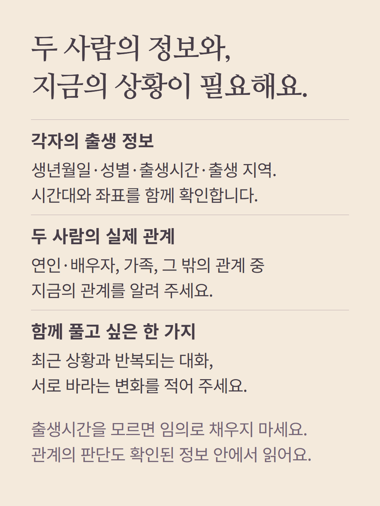
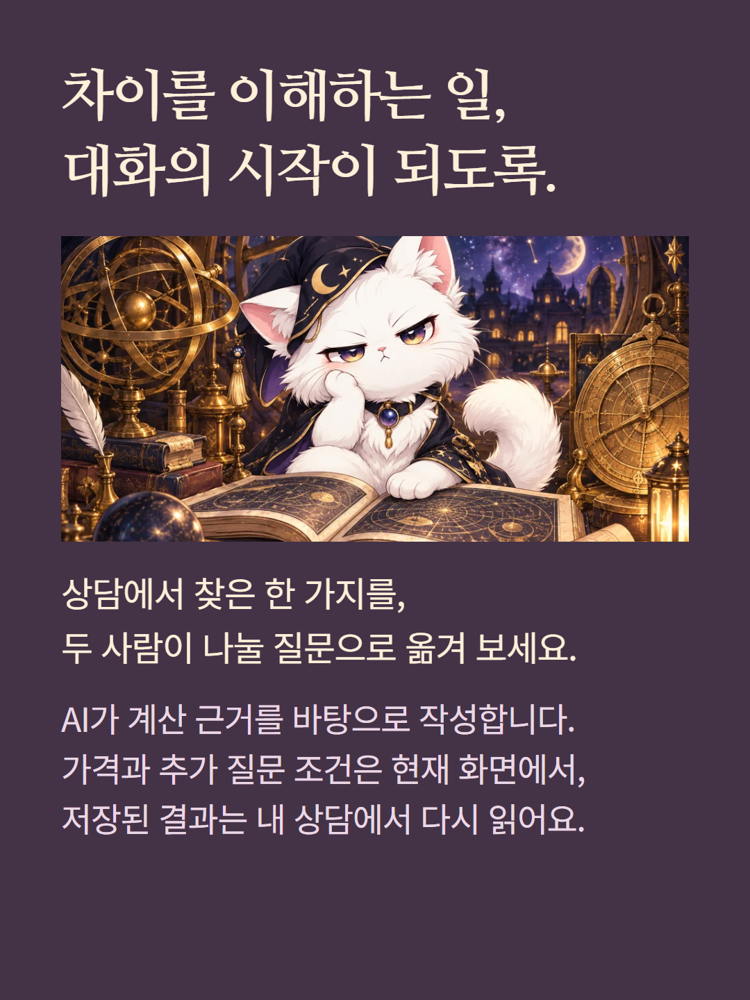

베다 광어의 질문 상담은 두 사람의 출생 차트와 실제 비교 근거를 바탕으로 관계의 차이와 합의할 조건을 읽습니다. 두 사람 궁합 질문은 15장, 질문 없이 읽는 기본 성향 리포트는 13장으로 구성이 다릅니다. 별도 레거시 궁합·건강 등 상담 종류를 고르면 해당 화면의 목차를 확인해 주세요. 아슈타쿠타 등 전통 비교는 결혼·재회 여부나 상대의 속마음을 확정하지 않습니다. 성인 연인·배우자 관계의 친밀감은 편안함·속도·대화·경계로만 다룹니다. 예시는 가상 편집이며 AI가 작성하는 상담입니다. 가격과 추가 질문 조건은 기존 화면에서 확인하세요.